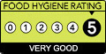

Arlott Restaurant & Starbucks
The Arlott caters for staff and students at the University of Southampton, in a warm and calming environment serving Starbucks hot and cold drinks. There is a range of Gluten free sandwiches, rolls and snacks available as well as soup, jacket potatoes and quiche. There is a lovely outside terrace area with magnolia tree and ducks!.
Main Site Assistant Catering Operations Manager: Mrs Suzie Hurst - sbh@soton.ac.uk Run by: Catering

Inspected: 2nd Jun 2014
Inspected: 2nd Jun 2014
Disabled Access
See the Arlott Restaurant & Starbucks access guide on DisabledGo.com
Menu for Friday 5th February
Please note: Prices shown on the web are intended as a guide only, and are subject to change.
Get the Data
If you're that way inclined, you can get the raw data used to create this page in various formats, as listed below.
| TTL | RDF/Turtle file |
| RDF | RDF/XML file |
| JSON | Javascript Object Notation file |